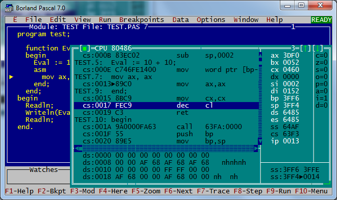
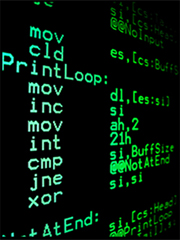
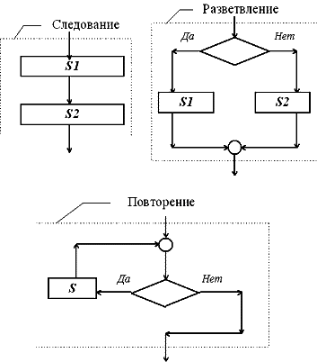

- У каждого из нас есть родной язык, есть он и у компьютеров, давай же узнаем, на каких языках мы можем разговаривать с компьютерами!
Начало развития

Первые программы заключались в установке ключевых переключателей на передней панели
вычислительного устройства. Очевидно, таким способом можно было составить только
небольшие программы.
С развитием компьютерной техники появился машинный язык, с помощью которого программист
мог задавать команды, оперируя с ячейками памяти, полностью используя возможности машины.
Однако использование большинства компьютеров на уровне машинного языка затруднительно,
особенно это касается ввода-вывода. Поэтому от его использования пришлось отказаться.
Например, для организации чтения блока данных с гибкого диска программист может использовать
16 различных команд, каждая из которых требует 13 параметров, таких как номер блока на диске,
номер сектора на дорожке и т. п. Когда выполнение операции с диском завершается, контроллер
возвращает 23 значения, отражающие наличие и типы ошибок, которые надо анализировать.
«Слова» на машинном языке называются инструкции, каждая из которых представляет собой одно
элементарное действие для центрального процессора, такое, например, как считывание информации
из ячейки памяти.
Каждая модель процессора имеет свой собственный набор машинных команд, хотя большинство из них
совпадает. Если Процессор А полностью понимает язык Процессора Б, то говорится, что Процессор
А совместим с Процессором Б. Процессор Б будет назваться не совместимым с Процессором А если
А имеет команды, не распознаваемые Процессором Б.
Язык ассемблера

В случае, когда нужно иметь эффективную программу, вместо машинных языков используются близкие
к ним машинно-ориентированные языки — ассемблеры. Люди используют мнемонические команды взамен
машинных команд.
Но даже работа с ассемблером достаточно сложна и требует специальной подготовки.
Например, для процессора Zilog Z80 машинная команда 00000101 предписывает процессору уменьшить
на единицу свой регистр B. На языке ассемблера это же будет записано как DEC B.
Структурное программирование

Следующий шаг был сделан в 1954 году, когда был создан первый язык высокого уровня — Фортран
(англ. FORTRAN - FORmula TRANslator). Языки высокого уровня имитируют естественные языки,
используя некоторые слова разговорного языка и общепринятые математические символы. Эти языки
более удобны для человека, с помощью них, можно писать программы до нескольких тысяч строк
длиной. Однако легко понимаемый в коротких программах, этот язык становился нечитаемым и трудно
управляемым, когда дело касалось больших программ. Решение этой проблемы пришло после изобретения
языков структурного программирования (англ. structured programming language), таких как Алгол(1958),
Паскаль(1970), Си(1972).
Структурное программирование предполагает точно обозначенные управляющие структуры, программные
блоки, отсутствие инструкций безусловного перехода (GOTO), автономные подпрограммы, поддержка
рекурсии и локальных переменных.
Суть такого подхода заключается в возможности разбиения программы на составляющие элементы.
Также создавались функциональные (аппликативные) языки (Пример: Lisp — англ. LISt Processing, 1958)
и логические языки (пример: Prolog — англ. PROgramming in LOGic, 1972).
Хотя структурное программирование, при его использовании, дало выдающиеся результаты, даже
оно оказывалось несостоятельным тогда, когда программа достигала определенной длины. Для того
чтобы написать более сложную (и длинную) программу, нужен был новый подход к программированию.